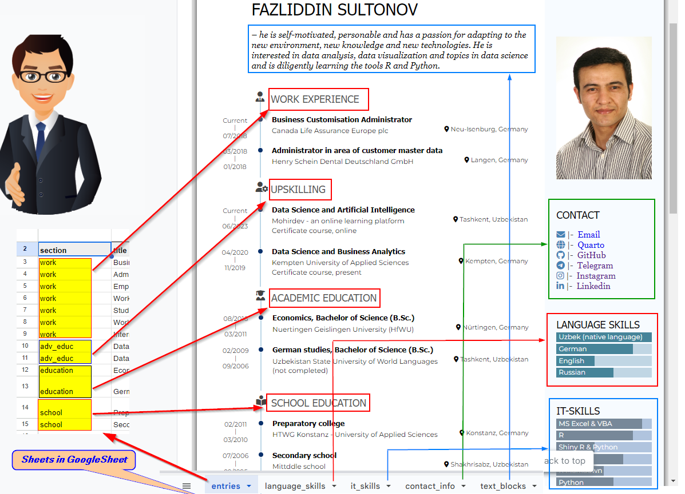
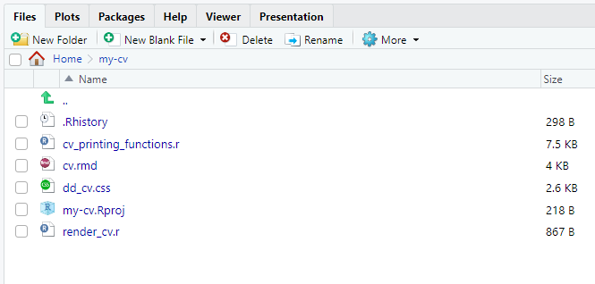

# install.packages("remotes") # if not yet installed
remotes::install_github("nstrayer/datadrivencv")1 Intro
Resume - lotinchadagi Currilicum Vitae bilan ham aytiladigan, qisqacha CV, ya’ni tarjimai hol, bu ishga ariza topshirishdagi hujjatlardan eng muhimi hisoblanadi. Rimga olib boradiga yo’llar kop bolgani kabi, CV ni ham har xil usullarda yaratish mumkin. Man o’zimni resume -imni shu paket yordamida yaratdim. Bu yerda Shu proyektchadan, R-dagi datadrivencv yordamida CV yaratishni qisqacha yoritib berishga qilaman. Paket muallifi Nick Strayer va paket haqida batafsil ma’lumotni GitHub saytidan olish mumkin.
Dastlab datadrivencv paketi haqida qisqacha. Bu R-dagi library ya’ni kutubxonalaridan biri. R dasturida bu package deyiladi. Buni Pythondagi modul-larga taqqoslash mumkin. Biror bir funksiyani ishlatish imkoniyatiga ega bolish uchun masalan, Paython-da olaylik, pandas mudulini avval installing qilib, ya’ni tushirib olib keyin (import) yuklashimiz kerak bolgani kabi, R-da ham avval paket tushirib olinadi va keyin (library) yuklanadi. Quyida misol tariqasida R-dagi dplyr paketi va Pythondagi pandas modulini tushirib olish va yuklash kursatilgan:
Intall Package dplyr
```{r}
install.packages("dplyr")
```Library Package dplyr
```{r}
library("dplyr")
```Install modul pandas (via Prompt)
```{python}
pip install pandas
```Import modul pandas
```{python}
import pandas as pd
```2 Set Up
Birinchi bo’lib man datadrivencv paketini tushirib olishim kerak. Bundan tashqari resume yaraishimga kerak bo’ladigan manbaa ya’ni inputni yaratishim kerak. Kerakli ma’lumotlar CSV-faylga (agar komputerda lokal saqlanmoqchi bolsa yok kimgadir Excelda ishlash qulay bolsa) yoki Google Sheets-ga jadval sifatida kiritiladi. Quyida bularni alohida qadam tarzda yoritilgan.
2.1 Download datadrivencv
R-dapopular yoki asosiy librarylar asosan CRAN (Comprehensive R Archive Network) dan yuklanadi. Bunda bizga ma’lum bolgan oddiy
install.pakages() funksiyasi yordamida tushirib olishimiz mumkin. Keyingi R-Paketlari uchun manbaalar bu GitHub hisoblanadi. GitHub development versiyasini tushirib olish uchun devtools yoki remotes paketi kerak boladi. Bu paketlarni CRAN-dan tushirib olsa boladi. Keyin esa remotes::install_github("Pakage") orqali tushirib olinadi.datadrivencv-Paketini tushirib olishda remotes yoki devtools paketlaridan foydalaniladi. Man remotes paketidan foydalandim. Paketni tushirishda R-Console-ga quyidagi buyruq beriladi:
2.2 Prepare data
Resumega kerak boladiga asosiy manba bu Input, ya’ni jadval sifatida kiritilgan ma’lumotlar. Bular resumida turishi kerak bolgan asosiy bolimlar, yani kontakt, o’zi haqida qisqacha ma’lumot, kasbiy va akademik yo’llar va hokozo. Man input sifatida Google Sheet-ni tanladim. Jadvalni noldan boshlab yangi yaratish va to’ldirib chiqish o’rniga, documentation-da avtor tomonidan aytilganidek, ushbu jadval nusxasini olish va uni ehtiyojga qarab o’zgartirish mumkin.
{kind=link}
Chapdagi rasmda kurinib turgandek, avtorni faylidan nusxa ko’chirib olish mumkin. Men nusxa kochirib, o’zimni ma’lumotlarimni berdim. Bu yerda e’tibor berilishi kerak bolgan narsa, jadval nomlari o’zgarmasligi kerak, agar yangi bo’lim, ya’ni section yaratilsihi kerak bolsa, u holda biz keyinchalik Section 3.3 da ko’radigan R-Skrip da ham kodni/funksiyani moslashtirish kerak.
Google Sheet yaratganda, sozlamasidan uni hamma kurishiga ruxsat qilib o’zgartirib quyish kerak. Sozlamada faqat ko’rish uchun ruxsat qilib, o’zgartirishni boshqala uchun cheklab qo’ysa boladi
Google Sheet dagi o’zimga moslashtirilgan jadval final holatda quyidagi ko’rinishda:
{kind=link}
Rasmda ko’ringanidek, fayldagi har bir jadval resumedagi bir bo’lim yoki section hisoblanadi. Masalan hozirgacha ishlagan joylarimizni har birini alohida qatorga kiritamiz. Bunda birinchi section ustuniga Work Experience sectioni uchun kalit so’zi sifatida “work” so’zidan foydalandim, (kalit so’zini ixtiyori o’zgartirisch mumkin). Shun narsani akademik va maktab ta’limi uchun ham takrorlaymiz, faqat har bir section uchun alohida kalit so’zi bolishi kerak, manda maktab ta’limi uchun “school” va akademik ta’lim uchun “education” qilib o’zgartirilgan. Boshqa jadvallarda ham shunday moslashtirishni qilamiz. Quyidagi rasmda inputdagi qaysi jadval resumini qayeriga joylashishi korsatilgan.

Jadvallar haqida, ularning formatlari, ustunlari va ularning vazifalari haqida bu yerda batafsil ma’lumot keltirilgan.
3 Go to work
Section 2.1 da aytib o’tilganidek datadrivencv-Paketini tushirib olib va Section 2.2 da korsatilgandek inputni tayyorlab bolgandan keyin asosiy qism, ya’ni R da resumeni yaratishni boshlasak boladi.
3.1 Create a new project
R-Project lari har xil loihalarda ishlanganda ma’lumotlarni oson o’qishga imkoniyat yaratadi. Har bir loiha ya’ni proyekt uchun R-Project yaratilsa, R shu projektga tegishli bolgan o’qiladigan va yaratiladigan yangi ma’lumotlar, fayllarni shu proyekt joylashgan papkaga joylaydi va shu yerdan o’qiydi.
R ma’lumotlarni asosan fayllar joylashgan papka qayer qilingan bolsa shu yerdan uqiydi (agar ma’lumot joylashgan papkaning to’liq adresi berilmasa). Bu R da Working Directory (WD) deyiladi. Yangi R-Project yaratilganda, R asosiy WD ni shu proyekt joylashgan joy qilib belgilaydi. R da hozirgi aktual WD ni Console ga
getwd() funksiyasin berish orqali bilib olsa boladi. Agar ma’lum bir adres asosiy WD qilinmoqchi bolsa setwd("adres/papka/file") funksiyasi orqali istalgan ma’lumotlar joylashgan joyni asosiy WD qilib o’zgartirsa boladi.{kind=link}
3.2 Use use_data_driven_cv() function
Yuqorida kursatilganidek, CV uchun R-Project yaratib olganimizdan keyin, birinchi bolib use_data_driven_cv() funksiyasini ishlatishimiz kerak boladi. Funksiya quyidagi ko’rinischda (argumentlar avtorniki, shularni o’zimiznikiga moslashtirishimiz kerak boladi):
{kind=link}
Funksiya quyidagi parametr va argumentlarni o’z ichiga oladi:
full_name |
Sarlavha, ya’ni resumeda eng tepada turadigan title, odatda ism-sharif |
data_location |
Barcha ma’lumotlarni o’z ichiga olgan jadvallar joylashgan joy. Bu ma’lumot turlarini o’z ichiga olgan jadvallar joylashgan Google Shett faylining URL manzili yoki yoki shu ma’lumotlar kiritilgan csv-fyallar joylashgan mazil bolishi mumkin |
pdf_location |
Yaratiladigan resumening PDF shakli saqlanishi kerak bolgan joy |
html_location |
Yaratiladigan resumening HTML shakli saqlanishi kerak bolgan joy |
source_location |
Resume yaratish kodi joylashgan manzil |
Funksiyani ishlatish uchun, uni o’zimini argumentlar bilan o’zlashtirib R-Consolega beramiz.
datadrivencv::use_datadriven_cv(
full_name = "Fazliddin Sultanov",
data_location = "https://docs.google.com/spreadsheets/d/XXXXXX",
pdf_location = here::here("my-cv.pdf"),
html_location = here::here(),
source_location = here::here()
)Yuqorida man here paketidagi here() funksiyasidan foydalandim. Yaratiladigan fayllar man yuqorida resume uchun yaratgan yangi my-cv loiha joylashgan my-cv papkasiga avtomatik tarzda joylanadi.
Expand for more about here::here()
here()-funksiyasi here paketi ichida bolib, asosan fayllar joylashgan manzillarni boshqarishni osonlashtiruvchi vazifasini o’taydi. Masalan agar biz R da qandaydir ma’lumotni yuklamoqchi bolsak, bu ma’lumot R-fayli (Misol uchun ma’lumotni yuklash va qayta ishglash yozilgan R-Skript) joylashgan joyda ya’ni papkada bolishi kerak, aks holda biz R-ga ma’lumot joylashgan papkani toliq manzilini berishimiz kerak boladi (Bu esa hatoliklar ehtimolini oshiradi). Aytaylik, man R-da yange R-Project yaratdim va bu loihani myproject deb nomladim. Shu loyiha ichida yana ma’lumotlar uchun mydada nomli quyi papka ayaratdim va bu papka ichida bir nechta excel va csv fayllar joyladim. Agar shu papka ichidan file.csv faylini yuklamoqchi bolsam quyidagicha amallarni bajarishim kerak:
setwd("C/users/Documents/myproject/")
df <- read_csv("mydata/file.csv")
# yoki
df <- read_csv("C/users/Documents/myproject/mydata/file.csv")here() funksiyasi orqali quyidagicha boladi:
library(here) # you may need to install the here package first
df <- read_csv(here::here("mydata", "file.csv"))Yuqoridagi use_datadriven_cv() funksiya ishga tushirilgandan keyin (yuqoridagi ammallar to’g’ri bajarilgan bolsa), bizda my-cv papkasida to’rta yangi fayllar yaratiladi. Buni Plots and Files bo’limida, ya’ni RStudioda bu panel deyiladi) ko’rishimiz mumkin.
 Yaratilgan fayllardan muhimi ya’ni uzgartirish yoki moslashtirilishi kerak bolganlari, bular cv.rmd, cv_printing_functions.r va render_cv.r.
cv.rmd |
Bu turli bo’limlari to’ldirilgan va resume tarkibini o’qiydigan RMarkdown fayl. Buni kerakli joyda uzgartirsa boladi. Masalan manda Upskllls bolimi yangi, bundan tashqari maktab ta’limi uchun ham alohda bo’lim School Eductaion qilingan. |
dd_cv.css |
Bu CSS-fayl, resumega shakl beruvchi (harflar kattaligi, turi, ranglar, va hokozo) qo’shimcha fayl. |
render_cv.r |
Ushbu fayl ishga tushirilganda rezyumening ham HTL ham PDF shakli yaratiladi |
cv_printing_functions.r |
Bu rezyumeni yaratish kodini o’z ichiga olgan fayl. Bu kod bir qancha funksiyalardan tashkil topgan. Bu funksiyalar jadvaldagi ma’lumotlarni Markdown/HTML ga o’tkazadi, va ularni PDF ga chop etischni ta’minlaydi. Odaytda fu faylda kop o’zgartirish qilinmaydi. |
3.3 Customize the RMarkdown file
Biz boshida paket yuklab oldik, o’zimizni ma’lumotlarni ichiga olgan jadvallarga ega Google Shett ya’ni inputni yaratdik va use_datadriven_cv() funksiyasini ishga tushirish bilan yuqoridagi fayllarga ega boldik. Qolgan asosiy ish, fayllarni o’zgartirish va rendering ya’ni rezyumeni yaratish qoldi. Asosiy o’zgartirilishi kerak bolgan fayl bu cv.rmd-faylidir. Man yuqorida Google Sheet da yangi bo’lim IT-Skills ham qushgandim. Shuning uchun bu bo’lim uchun ham kodni/funksiyani qo’shishim kerak. Buni cv_printing_functions.r faylida qilamiz. Buni man Language Skill funksiyasidan kopiya olib, o’zgartirib, IT Skills uchun yangi funksiya sifatida qo’shib qoydim.
Renedring paytda googlesheets4::sheets_deauth() ni o’rniga googlesheets4::gs4_deauth() qilib o’zgartirish kerak.
cv_printing_functions.R faylida hatolik yuz berishi mumkin (manda shunday boldi). Chunki bu faylda haliyam googlesheets4 paketidagi eski funksiya sheets_deauth() qollanilganidan ekan. Yangi funksiya gs4_deauth() ko’rinishda. Demak faylning 32-qatoridagi {kind=link}
Biz o’zgartirishimiz kerak bolgan asosiy fay bu cv.rmd. Section 2.2 da ko’rsatilganidek, Google Sheetdagi contact_info, language_skills va it_skills jadvallari va ulardagi ma’lumotlar rezyumeni o’ng tomonida joylashadi, cv.rmd-faylda Aside qismi. entries jadvali va undagi bo’limlar (work, school, va hokozo) rezyumening asosiy qismi hisoblanib, chap va o’rta qismni egallaydi, cv.rmd-faylda bu Main qismida. text_blocks jadvaldagi ma’lumot manda razyumening yuqorida joylashgan. Bu jadvalda bo’lim nomi manda intro deb o’zgartirilgan va Markdownda bu ham Main qismida joylashgan
{kind=link}
{kind=link}
Rezyumeni bo’limlariga mos ravishda icon joylashtirisch uchun, Font Awesome dan foydalaniladi. mAsalan manda Academic Education bo’limida graduate iconidan foydalanilgan, buni ham cv.rmd-faylida o’zgartirish kerak.
Academic Education {data-icon=user-graduate data-concise=true} > ====================================================
CV %<>% print_section('adv_educ')Google Sheetda entries jadvalida, section ustunida manda akademik ta’lim uchun kalit sozi adv_educ qilib o’zgartirilgan. BU cv.rmd-faylida ham print_section() funksiyasida shunday berilgan. Qolgan o’zgartirishlar ham shunday amalga oshiriladi.
4 Rendering the resume
Nihoyat yuqoridagi kursatilgan qadamlar togri bajarilgandan keyin, rezyumeni rendering ya’ni R-ga rezyumeni yaratishinga buyruq bersak boladi. Agar biz faqat HTML shaklini o’zini yaratmoqchi bolsak, buning uchun cv.rmd faylini ochib, RStudioda tepada Knit tugmasini bosish kifoya.
{kind=link}
render_cv.r fayldagi kodni bajarsak (RStudioda STRG+ENTER orqali kodni bajarsa ham boladi yoki yuqorida Run tugmasini bosish orqali), rezyume ham HTML, ham PDF shaklida yaratiladi.
5 Update the resume
Qachondir rezyumeni yana o’zgartirishga to’ri keladi, masalan boshqa ishga o’tilsa, yoki hayotimizda kasbiy tomondan nimadir o’zgarish ro’y bersa, yanga sertifikat, yangi kusr va hokozo. Bunda rezyumeni yangilash uchun
- Input (manda Google Sheet) o’zgartiriladi
cv.rmdfayli o’zgartiriladi (qachon yangi section qo’shilsa, agar mavjud ma’lumotlar o’zgartirilishi kerak bolsa, bu bosqich shart emas)- Va
render_cv.Rfaylidagi kodni boshqatdan run qilish